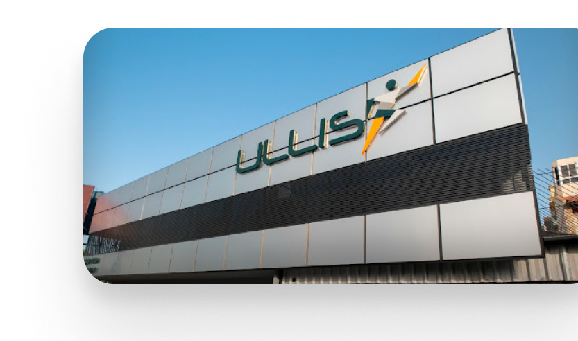
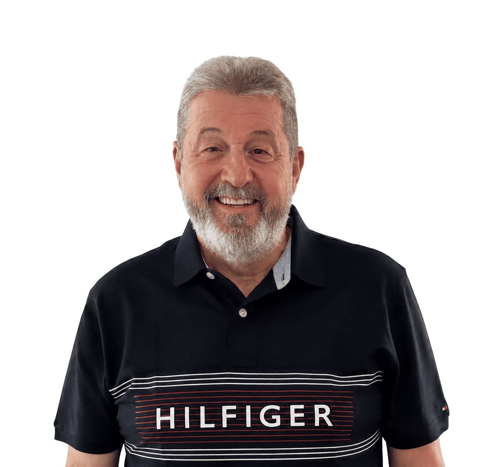
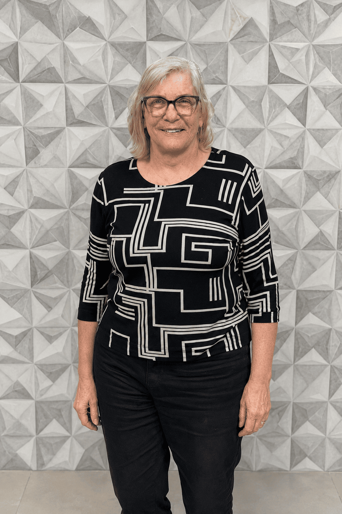
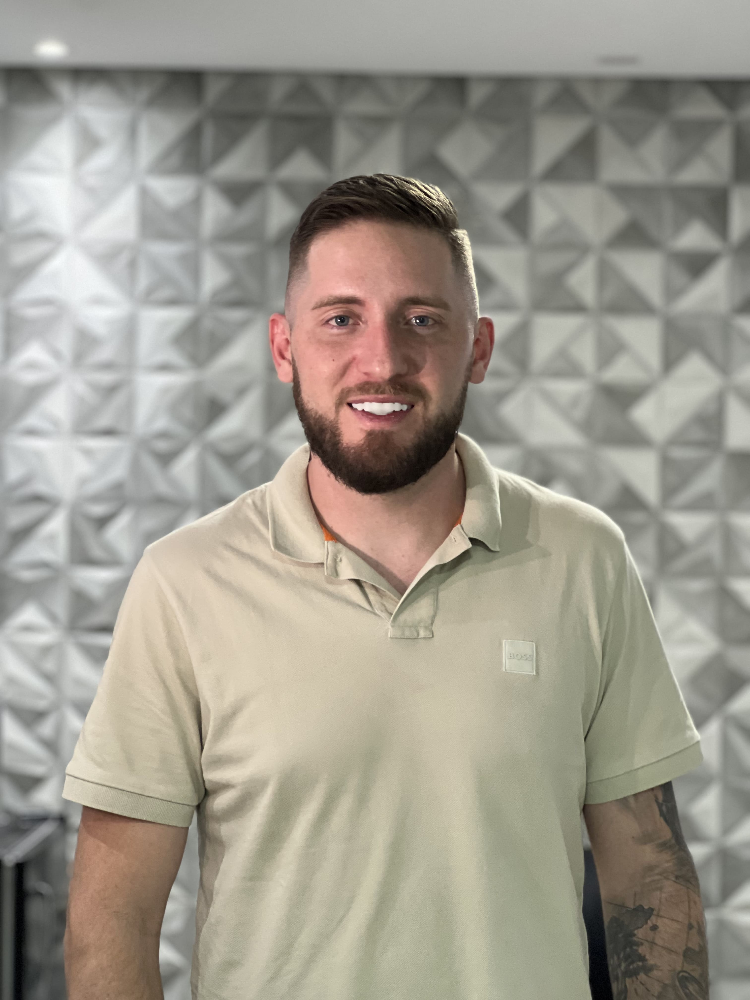
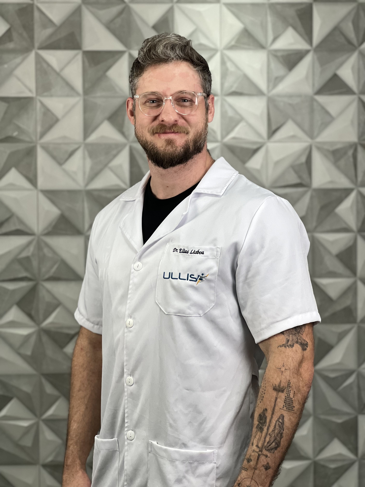

Desde 1986, a família Lisboa transforma vidas através da ortopedia técnica em Santa Catarina. O que começou com um propósito simples tornou-se a maior referência do setor no estado.

A Ullis foi fundada em 1986 por Valter e Ulla Lisboa com uma missão clara: oferecer próteses e órteses de alta qualidade para pessoas com deficiências físicas em Santa Catarina.
O que começou em uma pequena clínica em Florianópolis cresceu até se tornar uma rede com 4 unidades no estado, atendendo pacientes de todas as idades com a mesma dedicação dos primeiros dias.
Valter e Ulla Lisboa abrem a primeira clínica em Florianópolis com foco em ortopedia técnica.
A segunda unidade chega ao sul do estado, ampliando o alcance da Ullis para pacientes de toda a região.
Primeiro reconhecimento pelo Prêmio Top de Marcas e Qualidade Catarinense — distinção que se repetiria por anos consecutivos.
Davi V. Lisboa, filho dos fundadores, entra na empresa como Protesista/Ortesista, trazendo nova tecnologia e energia à clínica.
Abertura das unidades no litoral norte e no maior polo industrial de SC, completando a cobertura do estado.
Uma celebração de quatro décadas transformando vidas com ortopedia técnica de ponta e cuidado humanizado.
Uma família que dedicou a vida à reabilitação ortopédica — e uma liderança que compartilha do mesmo propósito.

Idealizou a Ullis em 1986 junto com Ulla. Ao longo de 40 anos, construiu com a família uma referência em ortopedia técnica em Santa Catarina.

Ao lado de Valter, Ulla deu nome e alma à Ullis. Seu cuidado com cada paciente moldou a cultura de acolhimento que a clínica carrega até hoje.

Filho de Valter e Ulla, Davi cresceu dentro da Ullis e formou-se em Ortopedia Técnica para dar continuidade ao legado da família com novas tecnologias.

Também filho dos fundadores, Elias trilhou o mesmo caminho do irmão e soma expertise técnica à missão familiar de transformar vidas pela ortopedia.
Oferecer uma melhor qualidade de vida através da prestação de serviços de ortopedia técnica, confeccionando órteses e próteses para pessoas com deficiências.
Ser referência nacional em tecnologia, inovação, criatividade e bom atendimento, para que as pessoas tenham um novo horizonte a cada passo.
Cordialidade, respeito, honestidade e conhecimento técnico. Princípios que guiam cada atendimento desde 1986 e que nunca mudarão.
Muito além de fabricar e vender próteses — nosso objetivo é facilitar a reabilitação do indivíduo, tornando seu dia-a-dia mais independente e prazeroso.
Reconhecimentos que nos orgulham porque vêm da confiança dos pacientes, não de campanhas.
Conquistado por anos consecutivos, este prêmio reconhece as empresas catarinenses com melhor avaliação de qualidade de serviço — um reflexo direto da satisfação dos nossos pacientes.
Em 2026, a Ullis completa 40 anos sem nunca parar — crescendo, inovando e, acima de tudo, cuidando de pessoas com a mesma dedicação do primeiro dia.
Agende sua avaliação gratuita e conheça pessoalmente a equipe que há 40 anos se dedica a transformar vidas.